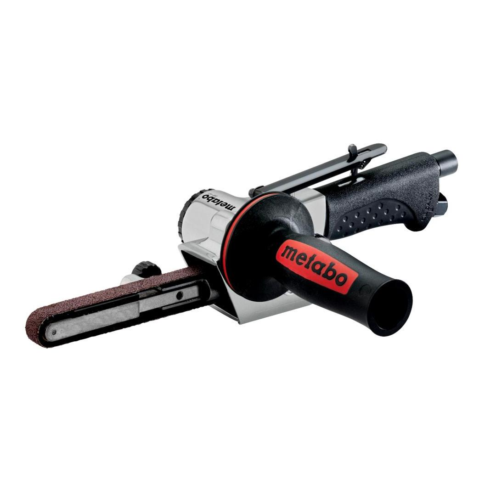

601559000

| Grinding belt width | 13 mm // 1/4 " |
| Grinding belt length | 457 mm / 18 " |
| Belt speed in idle | 20 m/s // 3937 ft/min |
| Useful length of sanding belt arm | 90 mm / 3 9/16 " |
| Operating pressure | 6.2 bar / 90 psi |
| Air requirement | 400 l/min / 14 cfm |
| Grinding belt width | 13 mm // 1/4 " |
| Grinding belt length | 457 mm / 18 " |
| Belt speed in idle | 20 m/s // 3937 ft/min |
| Useful length of sanding belt arm | 90 mm / 3 9/16 " |
| Weight | 1.5 kg / 3.3 lbs |
| Surface grinding | 0.5 m/s² |
| Uncertainty of measurement K | 0.56 m/s² |
| Sound pressure level | 87 dB(A) |
| Sound power level (LwA) | 98 dB(A) |
| Uncertainty of measurement K | 3 dB(A) |
| EURO Plug-in nipple 1/4" |
| ARO/Orion Plug-in nipple 1/4" |
| ISO Plug-in nipple 1/4" |
| Sanding belt (13 x 457mm;P120) |
| Fleece band (13 x 457mm; medium) |
| Hexagonal wrench |
| Oil bottles |